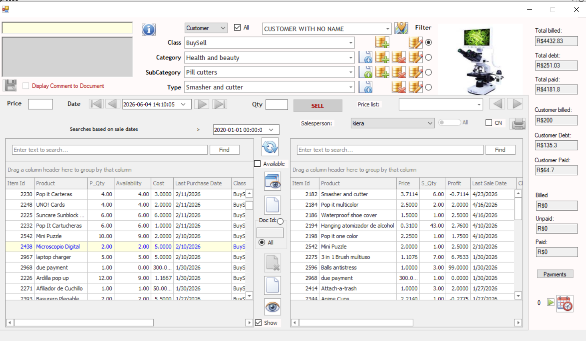
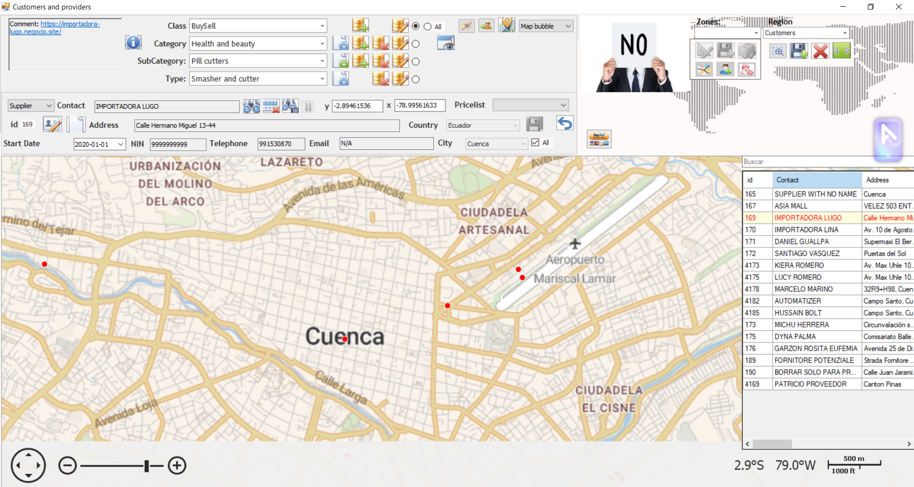
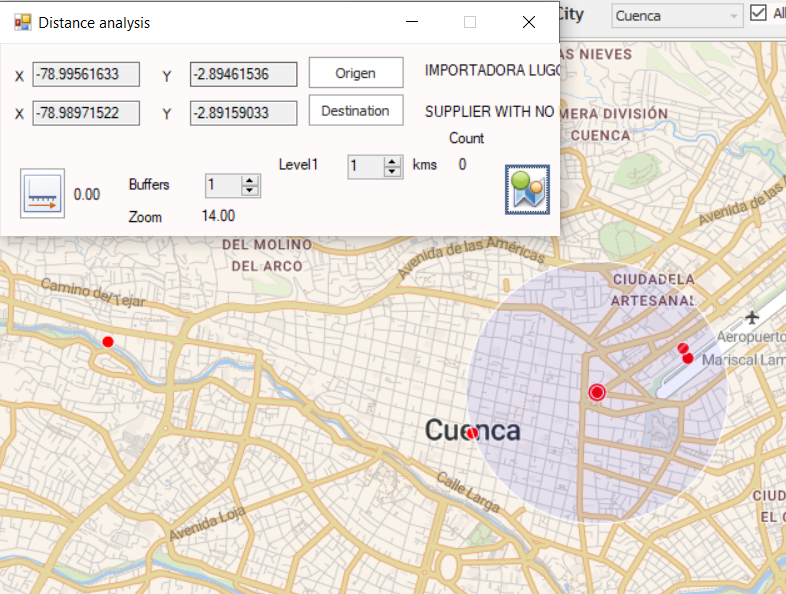
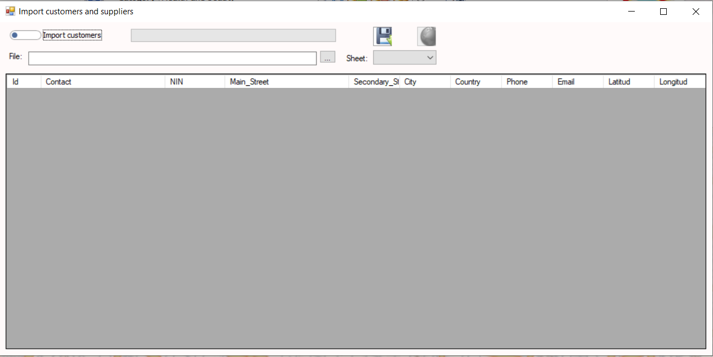

Progettato per Aziende in Crescita
Questo software è stato sviluppato per offrire la robustezza tipicamente presente nei sistemi aziendali enterprise, mantenendo al contempo semplicità e praticità d'uso. Le organizzazioni possono gestire clienti, fornitori, inventario, vendite, acquisti, territori commerciali, personale sul campo, processi di sincronizzazione e report operativi da un ambiente unificato.
La piattaforma integra software desktop, applicazioni mobili, negozi online e servizi di sincronizzazione, aiutando le aziende a mantenere informazioni accurate in ambienti multipli.
Transazioni di Vendita e Acquisto
Schermata centrale delle transazioni utilizzata per registrare vendite, acquisti, fatture, crediti, addebiti e operazioni commerciali. Progettata per garantire elevata produttività ed efficienza operativa quotidiana.

Anticipi e Regolazioni
Gestisci anticipi dei clienti, pagamenti anticipati ai fornitori, regolazioni delle fatture, applicazione dei pagamenti e riconciliazione dei saldi aperti.

Estratto Conto Clienti
Storico dettagliato dei conti clienti con fatture, pagamenti, saldi, crediti, addebiti e movimenti contabili. Fornisce una visibilità finanziaria completa.

Amministrazione Commerciale
Gestisci listini prezzi, strutture tariffarie, venditori, agenti di acquisto, territori commerciali e zone di vendita.

Magazzino e Controllo delle Scorte
Report avanzati di inventario che includono la cronologia dei movimenti, saldi di magazzino, tracciamento delle transazioni e funzionalità di audit dell'inventario.

Centro Assistenza Integrato
Piattaforma integrata per richieste di supporto che consente agli utenti di comunicare direttamente con il team di sviluppo, segnalare problemi e richiedere assistenza.

Catalogo Grafico dei Prodotti
Catalogo visivo dei prodotti con immagini, descrizioni, informazioni sui prezzi e dettagli dell'inventario in un formato intuitivo.

Configurazione del Sistema
Modulo completo di amministrazione dei parametri utilizzato per configurare regole operative, politiche aziendali e comportamento del sistema.

Centro di Sincronizzazione
Trasferisci e sincronizza informazioni tra sistemi desktop, applicazioni mobili, operazioni sul campo e negozi online.

Gestione di Clienti e Fornitori
Gestisci anagrafiche clienti e fornitori, informazioni di contatto, dati fiscali, condizioni commerciali e dettagli operativi.

Analisi delle Distanze
Calcola le distanze tra clienti, fornitori, territori di vendita e sedi operative per migliorare la pianificazione.

Mappatura della Forza Vendita
Visualizza geograficamente il personale commerciale, migliora la gestione dei territori e ottimizza le attività sul campo.

Gestione delle Città
Mantieni città e dati geografici di riferimento utilizzati nell'intera applicazione per logistica, reportistica e operazioni commerciali.

Clienti e Fornitori Georeferenziati
Memorizza le coordinate geografiche di clienti e fornitori per consentire la mappatura, l'ottimizzazione dei percorsi e l'analisi della prossimità.
